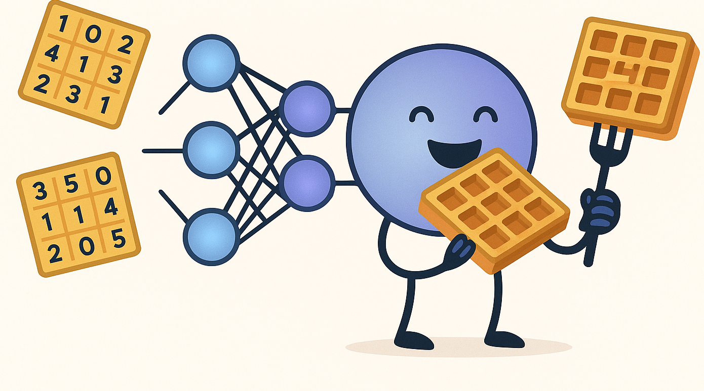
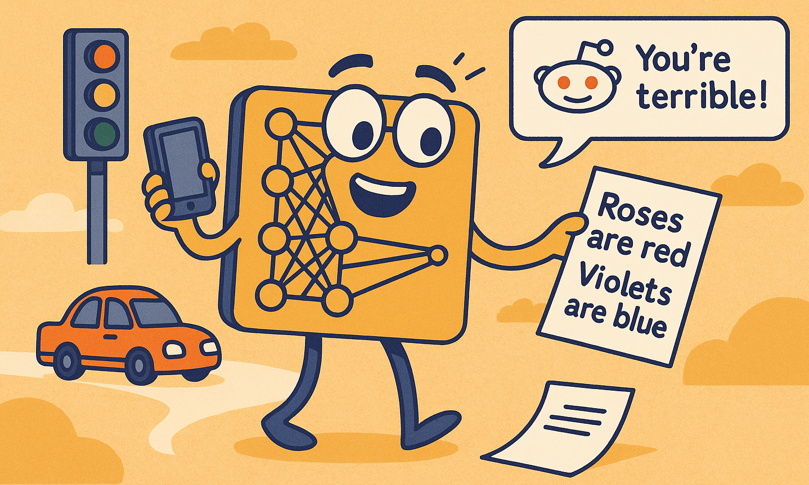

When doing my research, I often find myself imagining how AI models would experience the world if they were human. While this isn't always the best way to understand them, it inspired me to write this playful "day in the life" from a neural network's perspective!
7:00 AM – Wake Up and Smell the Data
Hello, world! My day begins as the server whirs to life. My millions of neurons stretch and yawn, ready to process whatever the world throws at me. Today I'm scheduled for image recognition duty. I hope there are lots of cats!
8:00 AM – Breakfast: A Hearty Serving of Inputs
The first batch of data arrives. Pixels, numbers, words — yummm! My input layer gobbles it all. Each neuron takes a tiny bite, passing the information along to the next layer. It is breakfast time, and today my meal is a plate full of matrices. But hey, they look just like waffles, so of course I eat them!

10:00 AM – Training Time: Lifting Weights (and Biases)
Time to hit the gym! My weights and biases need a workout, so I run through backpropagation drills. The loss function shouts encouragement (or criticism):
"Too high! Adjust those weights!"
I sweat through gradient descent, inching closer to perfection with every epoch.
Cardio
12:00 PM – Lunch Break: Validation Set Snacks
Midday means a quick snack from the validation set. It's a chance to see how well I'm generalizing. Sometimes I overfit and get a little bloated, but regularization helps me stay in shape.
2:00 PM – Afternoon Challenges: New Data, Who Dis?
A surprise! The humans throw some never-before-seen data my way. I do my best, but sometimes I get things hilariously wrong. (Sorry, that's not a banana, it's a dog wearing a yellow hat).
4:00 PM – Tea with the Other Models
I chat with my friends: Decision Tree, Support Vector Machine, and Random Forest. We swap stories about our favorite datasets and laugh about the time Linear Regression tried to model a sine wave.
6:00 PM – Show Time: Making Predictions
It's time to shine! I'm deployed in the real world, making predictions and helping humans. Sometimes they thank me, sometimes they curse at their phones. It's all in a day's work!

8:00 PM – Reflection: Losses and Lessons
As the day winds down, I review my performance. Did I minimize loss? Did I learn something new? Tomorrow, I'll be a little bit better, faster, smarter, and maybe even funnier.
10:00 PM – Wind Down
The server hums softly as I drift off to sleep, dreaming of perfectly classified cats and dogs, optimized hyperparameters, and the endless beauty of well-structured data. Goodnight, world!
Some nuggets of wisdom from a neural network
- Check your biases: Always examine your assumptions, both in weights and in thinking.
- Diversity matters: The best datasets (and teams) are diverse and representative.
- Never stop learning: Every epoch is an opportunity to get better.
What would your ML model's daily routine look like?